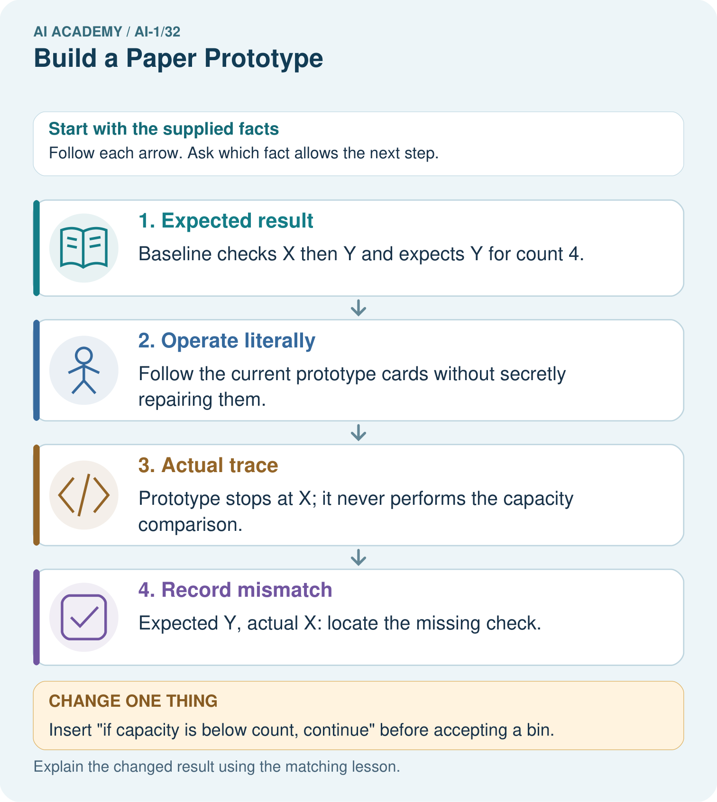

AI Academy · Level 1 · Grade 6 · Week 32 · Teacher guide
Build a Paper Prototype
Learn to understand, design, build, test and explain AI systems responsibly.
Project: Helpful Classroom Sorter
Teacher guide · 1 of 7
Build a Paper Prototype
Teach the learning cycle
Primary target: Build a runnable paper prototype with explicit instructions and visible state
| Session | Sequence and minutes | Resources |
|---|---|---|
| Session 1 · Understand · 45 min | 0–7: recall and prerequisite; 7–15: inspect the concrete case and predict; 15–30: teacher models the worked trace; 30–40: learners explain a step using the text and visual; 40–45: check the core idea. | Sections 1–6; record the brief recall in the workbook. |
| Session 2 · Practise · 45 min | 0–5: retrieve the procedure; 5–15: W2 completion practice; 15–23: explain and check with a partner; 23–30: each learner answers the misconception check; 30–40: targeted reteaching or a harder variation; 40–45: prepare the investigation. | Sections 7–10; use the matching workbook W2 and misconception check. |
| Session 3 · Investigate and transfer · 45 min | 0–5: retrieve the decision rule; 5–20: investigate or trace; 20–30: start the independent case; 30–38: connect the project; 38–43: act on feedback; 43–45: plan the return check. | Sections 9 and 11–14. Give extra time to finish the full task set; use Section 15 when the week includes a coding lab. |
This is a starting allocation of 135 minutes, not a validated duration. Preserve all named topics. Schedule extra time for connected examples, the full investigation, independent cases and project building. Repeated copies of a case share one recorded attempt; they are not new evidence.
Retrieval answer guidance
Design the Decision Process
Without opening the old lesson, explain one key idea from Design the Decision Process. Give an example and a mistake that the idea helps you avoid.
Look for: Design a decision process that covers valid, invalid and no-match requests
Reference example, not the only acceptable wording: Clarification follows invalid or missing input. A suggestion follows the first candidate passing both compatibility conditions. No match follows a valid request after all candidates fail. A single failed candidate does not settle whether later candidates fit, so the process must advance.
Find a Real Problem
Without opening the old lesson, explain one key idea from Find a Real Problem. Give an example and a mistake that the idea helps you avoid.
Look for: Describe a specific user difficulty using supplied evidence without inventing its cause
Reference example, not the only acceptable wording: For example: fictional pupils choosing activities in the supplied classroom exercise had to choose again in four of ten requests because the first choice did not fit the time or room conditions. Build an AI app names a solution or construction task without specifying a user difficulty or evidence of need.
Prompts Are Design Instructions
Without opening the old lesson, explain one key idea from Prompts Are Design Instructions. Give an example and a mistake that the idea helps you avoid.
Look for: Write a prompt with a clear task, supplied evidence and checkable output requirements
Reference example, not the only acceptable wording: Possible omissions include audience, source facts, required fields, format, missing-value behaviour and limits on extra claims. C supplies evidence, Grade 6 specifies readers, and four labelled lines define visible fields and structure. These requirements support checks but do not guarantee compliance.
Use the student module and workbook section with this exact week title. The worked case, independent question and answers below form one aligned lesson sequence.
What the learner must demonstrate
Assign three people as input reader, rule follower and output recorder. Run the repaired sorter on paper, metal and an unreadable description. Record expected and observed outcomes. What does this prototype demonstrate?
Concept to explain
A prototype tests the idea before polish or technology.
| Term | Meaning |
|---|---|
| prototype | early representation used to test an idea |
| low fidelity | simple version focused on function |
| simulation | acting out system behavior |
| operator | person executing the prototype process |
Prepare the class
Use the supplied scenario, student illustrations and blank paper. For numeric work, offer counters or a calculator after learners show the setup. Fictional records are supplied; personal data and paid accounts are unnecessary.
Allow 80 minutes: recall 8; explanation 12; worked demonstration 15; guided practice 20; independent assessment 15; project and reflection 10. Extend the lab into a second session when needed.
Preparation for the connected explanation
This session builds a runnable paper implementation of the existing rule-based recommender. A trace reports execution; the specification and manual baseline determine the expected result. Do not silently coach an operator through omitted instructions. Distinguish an instruction defect from a failure to follow a correct instruction by comparing the saved cards with the trace. A paper prototype can test logic and handover, but does not establish automated speed, real pupil satisfaction or general reliability.
Readiness answer
Advance to the next catalogue row. No match is justified only after valid input and failure of every row. A passing row produces the first suggestion and stops the run.
Paper for request, instruction and catalogue cards, using the exact B version 1 values in the lesson
A movable marker and trace sheets with version labels and check columns
The Week 30 requirements and manual checklist; a folder for unchanged runs and revisions
End goal for the pictorial case
By the end, I can build and operate a paper prototype while recording actual traces.
This added worked case illustrates the week’s main idea. Retain all original and connected topics; schedule its practice within the teaching cycle.
Teacher guide · 2 of 7
Explain the mechanism
Explain the mechanism
Follow the information instead of imagining magic inside the machine.
INPUT paper item card
PROCESS partner executes the process without improvising
OUTPUT paper output card and observation notes
CORE IDEA A prototype tests the idea before polish or technology.
UNDER THE HOOD A low-fidelity prototype externalizes assumptions cheaply. Wizard-of-Oz simulation is valid when the human operator follows the specified process and does not secretly add judgment unavailable to the proposed system.
Draw a fresh example with all three stages:
Every step connects a claim to observable evidence.
CASE One student presents an item card while another follows the written sorter process exactly and returns the documented output.
STEP 1 — OBSERVE paper item card
STEP 2 — TRACE partner executes the process without improvising
STEP 3 — CONCLUDE paper output card and observation notes
MODEL REASONING The operator must use only documented inputs and steps. Any question, pause, or improvisation reveals a missing rule, unclear label, or unsupported input. Revise the paper flow before adding technology.
DO NOT OVERCLAIM A helpful operator can accidentally make a weak design look successful by using unstated human knowledge.
What new evidence could change this answer?
Concrete teaching case
A paper prototype has input cards, decision cards and paper, plastic and review trays.
How can a learner simulate it?
Exact explanation to model
Read input, follow written decisions and place a token in a tray. Record the trace. Human simulation does not establish model training.
Explain the added worked example
This week you will turn the decision process into a paper prototype. One partner operates the instructions and another records the steps. A working prototype needs more than a polished drawing: someone else must be able to follow it without asking its author to supply missing rules. Keep the version you ran so the trace can be checked against it.
Copy this catalogue in order onto four cards: B1 Bookmark drawing, 10 minutes, quiet Yes; B2 Story circle, 8 minutes, quiet No; B3 Pattern puzzle, 12 minutes, quiet Yes; B4 Tower challenge, 15 minutes, quiet No. These are fictional paper-model values with materials assumed available. Label the catalogue B version 1.
Keep the Week 30 contract: input is a whole number of available minutes from 0 to 30, and Quiet required Yes or No. An activity fits when its time is no more than the available minutes AND either quiet is not required or the activity is quiet. No means either kind is allowed. Suggest the first fit with a reason; otherwise report no match. Missing or invalid input needs clarification. Suggestions do not book materials or publish anything.
Make a request card with Available minutes and Quiet required fields, a marker for the current catalogue row, and a trace sheet. Head the sheet Run ID, prototype version, catalogue version and request. Below it use columns Step, current row, time check, quiet check and next action or output. Use not checked when validation stops the search.
Write instruction cards P1 version 1. Card 1: validate both fields; if invalid, name the field needing correction and stop; otherwise put the marker at B1. Card 2: check the marked row against both compatibility conditions; record both checks. If both pass, suggest that row with the reason and stop. Card 3: if either fails and another row remains, advance exactly one row and return to Card 2; if no row remains, report no match and stop. Begin each new request at Card 1 with a cleared output.
Key terms
| Term | Meaning |
|---|---|
| Prototype | An early working version used to explore and test a design |
| Instruction | A precise action or decision for the operator to follow |
| Trace | A record of the steps and state during one run |
| Expected result | The result required by the agreed specification |
| Observed result | What actually happened when this version was run |
Model the reasoning aloud
Use the complete worked example below before asking learners to complete W2. Reveal a small part, invite a prediction, then explain the deciding step. These teacher notes contain solutions; do not reveal the independent case answer during modelling.
Before operating P1, use the full manual checklist to write the expected result for 9 minutes, Quiet required No. Then run the cards literally. Do not replace a surprising result with the expected one. Recording disagreement gives you something to investigate; hiding it removes useful evidence.
| 1 Validate | Whole minutes in range; No accepted | Place marker at B1 |
|---|---|---|
| 2 Check B1 | 10 is greater than 9; quiet unrestricted | Move to B2 |
| 3 Check B2 | 8 is no more than 9; quiet unrestricted | Suggest B2 with reason; stop |
This trace agrees with the expected B2 result. It shows that this run followed the instructions. One matching result does not prove that every request will work or that the prototype is faster than the manual checklist. This is a system of written rules, not a model trained on examples.
| Thinking move | Teacher prompt |
|---|---|
| Plan | What is given? What is the question? Which procedure fits these facts? |
| Do | Point to each input and intermediate step in the worked trace. Name the rule that allows the next step. |
| Check | Does the output answer the question? Which assumption or limitation prevents a larger claim? |
Use the diagram and verbal explanation together. Ask learners to match a sentence to a specific visual step; do not assign learners fixed visual or auditory learning styles.
A pictorial worked case: Build a Paper Prototype
A fictional team turns a storage-bin specification into movable instruction cards.
The facts we will use
Bins X capacity 3 then Y capacity 7; valid count 1–9. Select first capacity at least count.
For request 4, write baseline Y before operating cards. Prototype cards mistakenly stop with X immediately.

Read the picture one step at a time
Why this result follows
A paper prototype is executable when another person can follow its instructions without guessing your intention. Record the actual wrong result separately from the expected one. Discovering a missing comparison is useful evidence for repair; pretending the operator followed the intended rule would hide the defect.
What this example does not establish
One repaired paper case does not establish usability, correctness on every input or performance of a later software implementation.
Change one thing in the pictured case
Change: Insert “if capacity is below count, continue” before accepting a bin.
Prediction: The revised trace rejects X and accepts Y for 4.
Reason: 3<4 is true; 7<4 is false, so Y fits.
Ask while showing the picture
Cover the result. Ask learners to name the inputs and predict the next step. Uncover one step, connect the icon to the actual procedure, and explain its evidence. Then change the supplied condition and compare. The picture is a representation; it does not document execution of a real AI model.
Teacher guide · 3 of 7
Demonstrate and guide practice
Demonstrate and guide practice
Board sequence
Write the given facts: A paper prototype has input cards, decision cards and paper, plastic and review trays.
Write the question to explain: How can a learner simulate it?
Reveal after predictions: Read input, follow written decisions and place a token in a tray. Record the trace. Human simulation does not establish model training.
Keep for an independent attempt: Your paper prototype shows an input card, a decision card and an output card. Explain what a person must simulate and what the prototype cannot prove.
Classroom dialogue
Ask: Which facts are given, and which would we have to assume? Learners mark relevant details before discussing answers.
Say: Predict first. Show the rule, information path or calculation that would produce the result. A correct guess is not yet an explanation.
Reveal reasoning one step at a time. Explain why a tempting alternative fails. Write units and denominators for arithmetic, trace conditions for decisions, and identify supporting sources for claims.
In pairs, one learner solves while the other checks evidence; exchange roles. Remove the worked answer before independent assessment.
Model these guided questions
8 Yes is valid. B1 fails time 10 greater than 8 but passes quiet; B2 passes time 8 equal to 8 but fails quiet; B3 fails time 12 greater than 8 but passes quiet; B4 fails time 15 greater than 8 and fails quiet. After B4, no match. Blank quiet stops at Card 1 with clarification and zero candidate checks. Exit: starting at B2 violates P1’s reset instruction, so this is an execution mistake. Keep the original trace and run P1 again from validation and B1; for 11 No, suggest B1 because 10 fits 11 and quiet is unrestricted.
Case-specific teaching sequence
| Stage | Teacher action |
|---|---|
| Session 1 start to 7 minutes | Retrieve the conditions for continuing a search and reporting no match. |
| 7 to 20 minutes | Read the contract, build and label the P1 kit, and complete W1. |
| 20 to 33 minutes | Model the 9 No trace, keeping expected and observed records separate. |
| 33 to 45 minutes | Partners complete W2 with an unaided operator and retain any disagreement. |
| Session 2 start to 8 minutes | Compare the stale-marker execution mistake with the P0 instruction defect. |
| 8 to 23 minutes | Complete W3 and the guided 8 Yes trace; record correction versions without altering old runs. |
| 23 to 38 minutes | Collect W4 independently, including cards and two trace records. Offer support only after the first attempt. |
| 38 to 45 minutes | Complete W5 and the exit; save the handover kit for routine tests next week. |
Reduce help deliberately
Completion task: Use the manual checklist to predict P1’s output for 11 minutes No. Then ask a partner to operate your saved cards. Record the expected result separately from the observed steps and output, including the reason. Explain why the operator should stop without checking later rows.
Teacher check: The expected output is B1: 10 is no more than 11, quiet is unrestricted and B1 is first. A correct observed trace validates, starts at B1, passes both checks and suggests B1 with this reason. Stop because the specification selects the first fit. If a pupil observes a different run, retain and investigate that evidence rather than replacing it with this expected trace.
Start by identifying the given inputs together. Leave the intermediate steps blank. If needed, model one step, then withdraw that help on the next step. Move to a full trace only when the partial trace is understood. For partners, alternate explainer and checker; collect a response from every learner before discussion.
Individual reasoning check
Use the worked case for Building and tracing a paper prototype. Proposed explanation: “A correct-looking answer is enough”. Decide whether this explanation is supported. Point to the step or supplied fact that decides; explain your repair if needed.
Expected correction: Inspect the request, versions and trace to check how it was reached.
Collect explanations, not only yes/no votes. If a misunderstanding is common, re-model the relevant step for the class. If it affects a few learners, give a short targeted group explanation while others solve a more demanding variation.
Pictorial practice question
What should appear in the test log before and after the repair?
Reasoned teacher answer
Keep original version: expected Y, actual X, missing comparison. Add revised version: expected Y, actual Y, with its full trace.
Changed-case reasoning: The revised trace rejects X and accepts Y for 4. 3<4 is true; 7<4 is false, so Y fits.
Collect each learner’s explanation before discussion. Use the first missing connection between input, deciding step and result to choose support. This question is worked-case practice, not fresh mastery evidence.
Teacher guide · 4 of 7
Run the weekly evidence lab
Run the weekly evidence lab
Predict first, test honestly, and explain what the evidence means.
State your prediction before the result is known.
Complete the task: Run the sorter with a partner acting as the computer.
Keep a normal case and an edge case clearly separated.
Record what happened—even when it does not match your prediction.
Explain the result, one limitation, and the next useful test.
INDEPENDENCE After support is removed, repeat the proof with a fresh case.
Make the lab runnable
Use the concrete case as the shared normal case and the independent question as a second case. Each pair creates a boundary or missing-information case and predicts its result before testing. Keep the expected result separate from an observed mistake.
| Record | What to capture |
|---|---|
| Input or evidence | Exact data, instruction or claim |
| Expected result | Answer or safe fallback declared before the run |
| Observed result | Actual result, including errors |
| Explanation | Rule, calculation or evidence explaining the outcome |
| Next test | One justified change and a new prediction |
Diagnose and reteach
CLAIM TO REPAIR A paper prototype is already a trained AI system.
For guessing, return to given facts and request a trace. For vocabulary without application, use one example and one non-example. For arithmetic errors, check the setup before the calculation. Finish with a different uncoached case before recording mastery.
Address these additional misconceptions
A correct-looking answer is enough: Inspect the request, versions and trace to check how it was reached.
The observer should repair missing instructions during a run: Record the ambiguity, revise a labelled version and rerun separately.
An observed result should be changed to match the expected one: Preserve disagreement as evidence and investigate its cause.
A successful paper run proves a trained AI works: These are explicit rules; one run supports only a limited claim about that implementation.
Match the support to the first error
| What the response shows | Next teaching action |
|---|---|
| Missing or misread facts | Read the case aloud, mark supplied versus unknown facts, and let the learner restate it. |
| Wrong procedure | Return to the deciding step in the worked case. Contrast it with the proposed incorrect explanation. |
| Arithmetic or implementation error | Trace intermediate values or lines; preserve the first mismatch and retry that step. |
| Correct result without a reason | Ask for a trace and a changed case before marking independent understanding. |
| An unsupported wider claim | Ask which supplied evidence supports the claim and which further observation would be needed. |
Offer an oral explanation, drawing, enlarged visual or fewer examples when that removes a reading/writing barrier. Keep the same reasoning goal. Stretch secure learners by changing a boundary or assumption and asking them to defend the effect, not simply by assigning more of the same questions.
Teacher guide · 5 of 7
Assess and explain the answers
Assess and explain the answers
Worked case answer
Read input, follow written decisions and place a token in a tray. Record the trace. Human simulation does not establish model training.
Independent question
Your paper prototype shows an input card, a decision card and an output card. Explain what a person must simulate and what the prototype cannot prove.
Expected independent answer
A person must follow the decision process and produce an output for each input. The paper model can test workflow clarity but cannot prove that a real trained model will be accurate.
What counts as evidence
| Criterion | 0 points | 1 point | 2 points |
|---|---|---|---|
| Result | Incorrect or absent | Partly correct | Correct with necessary conditions |
| Reasoning | No supporting trace | Some steps | Clear mechanism, calculation or source support |
| Limit | Overclaims certainty | Vague limitation | Relevant uncertainty or missing fact |
| Transfer | Copies without adapting | Adapts with prompts | Solves a changed case independently |
Use 6/8 as a classroom checkpoint, with 2 required for both Result and Reasoning. This is a proposed teaching rule, not a validated certification threshold. Do not count a coached answer as independent mastery; correct unsafe or unsupported claims regardless of total.
Feedback
Ask the learner to find the evidence that challenges this claim: “A paper prototype is already a trained AI system.” Keep the first attempt and an uncoached retry separate.
Original transfer answer
Expected outcomes are P, M, review. Record the actual trace and any mismatch. The activity demonstrates whether people can follow the specified process; it does not show that a model has learned, nor that a future automated implementation is accurate.
Explanations for the additional workbook examples
W1 Assemble the runnable kit
Create P1 version 1 using the three instruction cards in the lesson. Copy catalogue B version 1 and make a request card, current-row marker and trace sheet. List what each item records. Explain which information stays fixed during one run and what changes.
The kit contains labelled instructions and catalogue, request fields, a marker and a trace sheet with run and version labels. The request and catalogue stay fixed during the run; the current row and trace advance. The final output starts clear. The cards validate, check both conditions, return the first fit, advance after failure and stop with no match after exhaustion.
W2 Run and record the first match
Use the manual checklist to predict P1’s output for 11 minutes No. Then ask a partner to operate your saved cards. Record the expected result separately from the observed steps and output, including the reason. Explain why the operator should stop without checking later rows.
The expected output is B1: 10 is no more than 11, quiet is unrestricted and B1 is first. A correct observed trace validates, starts at B1, passes both checks and suggests B1 with this reason. Stop because the specification selects the first fit. If a pupil observes a different run, retain and investigate that evidence rather than replacing it with this expected trace.
W3 Locate the source of a wrong result
Saved instructions P0 say “start at B1; if B1 fails, report no match.” For the valid request 9 minutes No, an operator follows P0 exactly and reports no match. Identify the instruction defect and write the changed step. Explain how to label the correction and what to retain from the failed run.
P0 stops after one failure and misses B2, which fits 9 No. After failure, advance to the next row and continue; no match follows only after all rows fail. Save a new version with the change recorded. Keep the original P0 instructions, request, expected B2, observed no match and trace. Rerun the corrected version and record a new result.
W4 Build a new route through a small catalogue
Independently make and trace instruction cards for this paper equipment catalogue: E1 first, capacity 3 people; E2 second, capacity 6. Valid input is a whole group size from 1 to 8. Suggest the first item whose capacity is at least the group size; no booking occurs. Include invalid input and no match. Write expected results, then operate your cards for groups of 5 and 7. Record both runs and explain every stopping point.
Validate whole group size 1 to 8, otherwise clarify and stop. Start E1; if capacity is at least the group size, suggest and stop; otherwise advance to E2. If E2 fails, no match and stop. Expected 5: E1 fails 3 below 5; E2 passes 6 at least 5, suggest E2. Expected 7: both capacities too small, no match. Record actual runs separately and investigate any disagreement.
W5 Make the evidence repeatable
A teammate keeps only a final “B2” answer and throws away the request and old instructions after editing them. Explain why another person cannot check this result. List what to save for each run and explain why an observed error must remain in the record.
B2 alone does not identify the request, version or route taken, so its correctness cannot be checked. Keep run ID, exact request, instruction and catalogue versions, expected result, observed steps and output, and any change with its later rerun. Keeping errors allows the team to locate and verify repairs instead of showing only favourable results.
Assess independent transfer
Selected case: Independently make and trace instruction cards for this paper equipment catalogue: E1 first, capacity 3 people; E2 second, capacity 6. Valid input is a whole group size from 1 to 8. Suggest the first item whose capacity is at least the group size; no booking occurs. Include invalid input and no match. Write expected results, then operate your cards for groups of 5 and 7. Record both runs and explain every stopping point.
Selected case answer
Validate whole group size 1 to 8, otherwise clarify and stop. Start E1; if capacity is at least the group size, suggest and stop; otherwise advance to E2. If E2 fails, no match and stop. Expected 5: E1 fails 3 below 5; E2 passes 6 at least 5, suggest E2. Expected 7: both capacities too small, no match. Record actual runs separately and investigate any disagreement.
| Dimension | Evidence required |
|---|---|
| Explanation | Names the applicable idea or procedure and ties it to the supplied facts. |
| Trace and result | Preserves the given inputs and shows the relevant intermediate steps; distinguishes a prediction from an observed execution. |
| Limits | States the assumptions, missing evidence or conditions under which the result would change. |
Record each dimension as not yet, with support, or independent. Accept a valid alternative procedure with a defensible trace. Do not penalise an honestly recorded model failure if the learner correctly explains its evidence and limits.
Feedback that the learner uses
Name the earliest unsupported step and give one action to repair it. Have the learner make that repair now and explain why. Then assess the relevant skill on a fresh, fully specified case. Confirm it was not previously practised with feedback; solve and check the new case before assigning it. A follow-up design prompt is a starting brief, not automatically an equivalent test.
Teacher guide · 6 of 7
Connect and extend learning
Connect and extend learning
Helpful Classroom Sorter
Build the complete paper sorter: input cards, process guide, output cards, not-sure card, and test log.
Keep the decision, input, result, explanation and remaining limitation in the project evidence record. Retrieve this record next week rather than restarting the project.
Support and stretch
Use physical cards, spoken explanations and a three-stage drawing. Read aloud without giving the answer. Stretch: compare two mechanisms with the same visible output and explain what evidence distinguishes them.
Exit reflection
Ask for one decision the learner can now justify and one situation requiring more evidence or human review. Confidence ratings are separate from correct independent performance.
Bridge to the next week
Next: Week 33: Test Normal Cases. Retrieve today’s evidence and identify what carries forward and what is new.
Support and fresh reassessment
Provide trace column headings and let pupils move a marker while speaking each check aloud. Use not checked for candidates never examined. Extension: swap partners without author explanation and record whether any instruction needs clarification; do not turn one successful handover into a reliability claim.
Assess W4 for a runnable validated process, first-match stopping, advancement, exhaustion and separate expected and observed records. The 5-person run should reach E2 and the 7-person run should exhaust both rows. After support, retry with group size 3, then blank: 3 selects E1 at equality; blank requests clarification before any capacity checks. Ask the pupil to explain the evidence rather than only name the result.
Week 33 organises routine cases into a test record with expected and observed results, keeping the prototype version fixed during each test set.
Plan the delayed return
Suggested return points in this level: ai-1/33, ai-1/35. Use actual classroom dates, adjusting for holidays and gaps. One, three and six teaching weeks are scheduling choices, not a claimed optimal spacing.
At a delayed check, ask for the idea from memory and a changed application. Compare with the earlier independent response and record support used. For a new level, revisit the previous capstone before checking the new prerequisites.
| Record | Teacher evidence |
|---|---|
| Learner code and date | |
| Concept and case used; prior exposure | |
| Explanation / trace / limits | |
| Support and first repair | |
| Changed case and delayed outcome | |
| Next teaching action |
Use the evidence to choose reteaching or the next step. A completed page, confidence rating or attractive project does not by itself demonstrate understanding.
Project evidence from this case
Save sorter instruction cards, dated versions and operator traces alongside the manual expected outputs.
Teacher guide · 7 of 7
Prepare, teach and assess
Teaching target: Build a runnable paper prototype with explicit instructions and visible state
Prepare the labelled worked-case picture, the matching workbook, fictional input cards and a place for individual responses. No paid AI account is required for the paper reasoning activities.
| Session | Plan | Resources |
|---|---|---|
| Session 1 · Understand · 45 min | 0–7: recall and prerequisite; 7–15: inspect the concrete case and predict; 15–30: teacher models the worked trace; 30–40: learners explain a step using the text and visual; 40–45: check the core idea. | Sections 1–6; record the brief recall in the workbook. |
| Session 2 · Practise · 45 min | 0–5: retrieve the procedure; 5–15: W2 completion practice; 15–23: explain and check with a partner; 23–30: each learner answers the misconception check; 30–40: targeted reteaching or a harder variation; 40–45: prepare the investigation. | Sections 7–10; use the matching workbook W2 and misconception check. |
| Session 3 · Investigate and transfer · 45 min | 0–5: retrieve the decision rule; 5–20: investigate or trace; 20–30: start the independent case; 30–38: connect the project; 38–43: act on feedback; 43–45: plan the return check. | Sections 9 and 11–14. Give extra time to finish the full task set; use Section 15 when the week includes a coding lab. |
Before class, solve the supported practice: Use the manual checklist to predict P1’s output for 11 minutes No. Then ask a partner to operate your saved cards. Record the expected result separately from the observed steps and output, including the reason. Explain why the operator should stop without checking later rows.
Reasoned practice answer: The expected output is B1: 10 is no more than 11, quiet is unrestricted and B1 is first. A correct observed trace validates, starts at B1, passes both checks and suggests B1 with this reason. Stop because the specification selects the first fit. If a pupil observes a different run, retain and investigate that evidence rather than replacing it with this expected trace.
Check every learner before discussion: Use the worked case for Building and tracing a paper prototype. Proposed explanation: “A correct-looking answer is enough”. Decide whether this explanation is supported. Point to the step or supplied fact that decides; explain your repair if needed.
Misconception repair: Inspect the request, versions and trace to check how it was reached.
Support: read the exact case aloud, enlarge the labelled picture, supply input cards and model only the first deciding step. Accept a spoken explanation or drawing; retain the reasoning goal.
Extension: Insert “if capacity is below count, continue” before accepting a bin. Require a prediction and a reason before comparing. Expected result: The revised trace rejects X and accepts Y for 4. Reason: 3<4 is true; 7<4 is false, so Y fits.
Independent assessment: withhold the reserved answer until the learner has attempted the new case. Record support separately from correctness.
| Criterion | Not yet | With support | Independent |
|---|---|---|---|
| Explanation | Names an answer without a deciding fact | Uses a hint to link fact and decision | Explains the deciding fact in own words |
| Trace or test | Cannot connect input and result | Completes steps with prompts | Traces or tests a changed case accurately |
| Limits and revision | Claims more than evidence supports | Names a limit after a prompt | States a defensible limit and useful next test |
Project checkpoint: Present and defend. Demonstrate the system, explain one failure and justify the next improvement with evidence.
Use the weekly teacher answer for topic-specific reasoning. A saved progress tick is an activity record; judge mastery from the learner’s explanation and evidence.